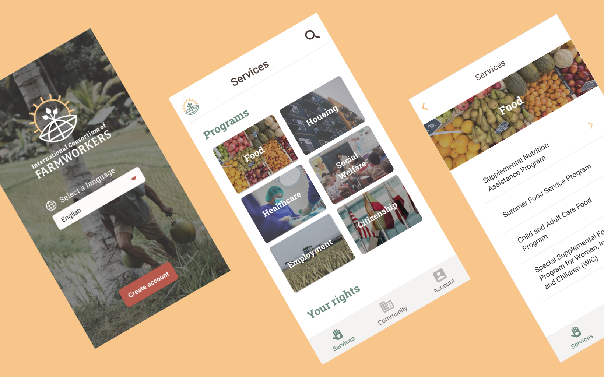
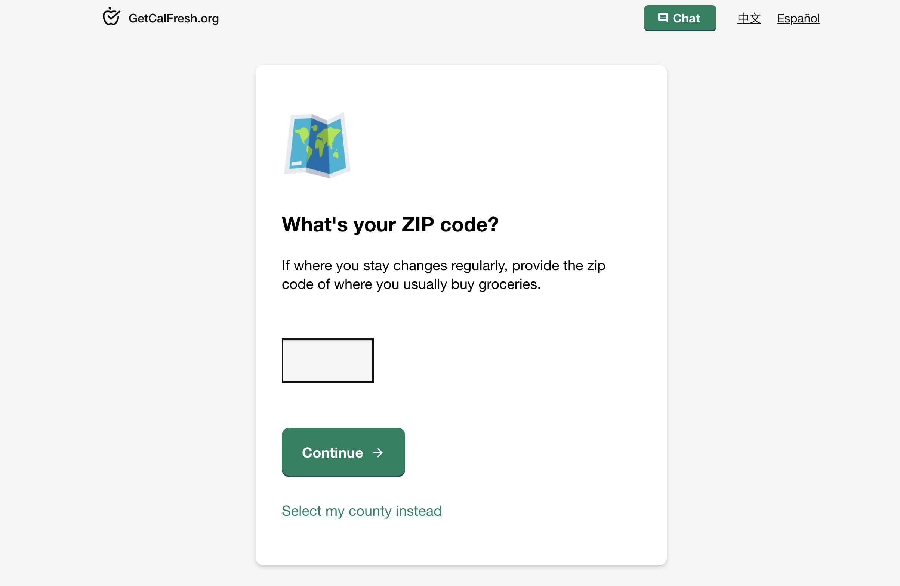
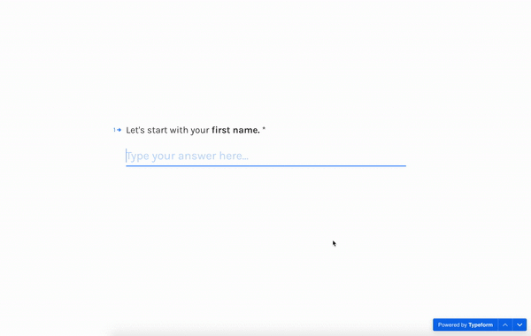
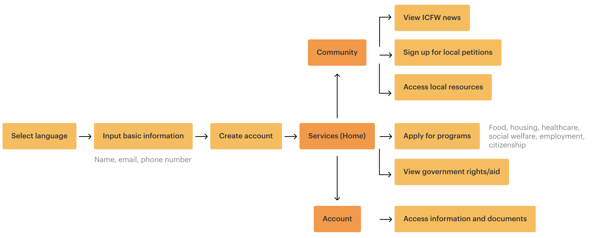
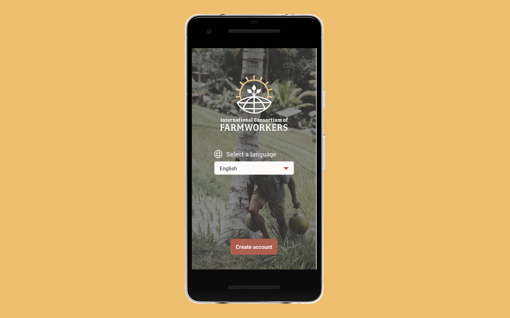
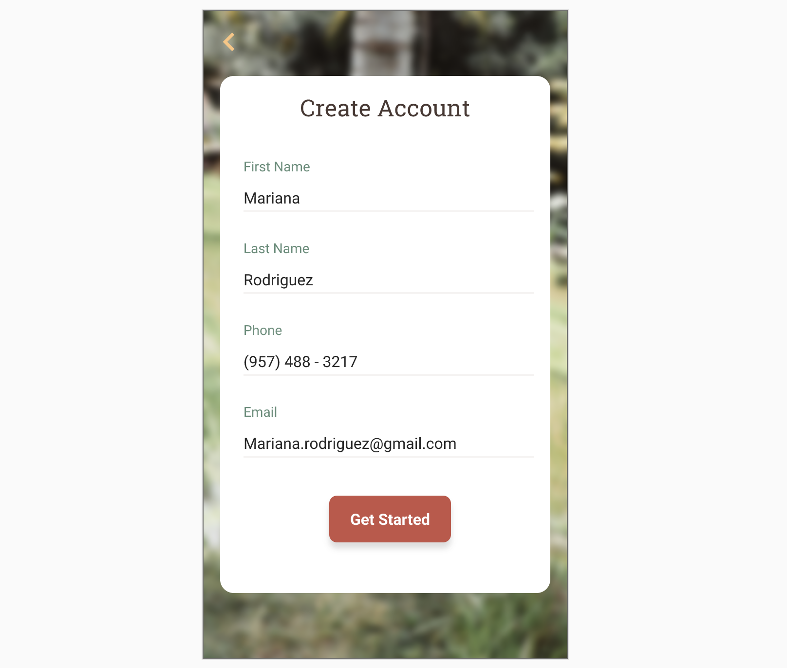
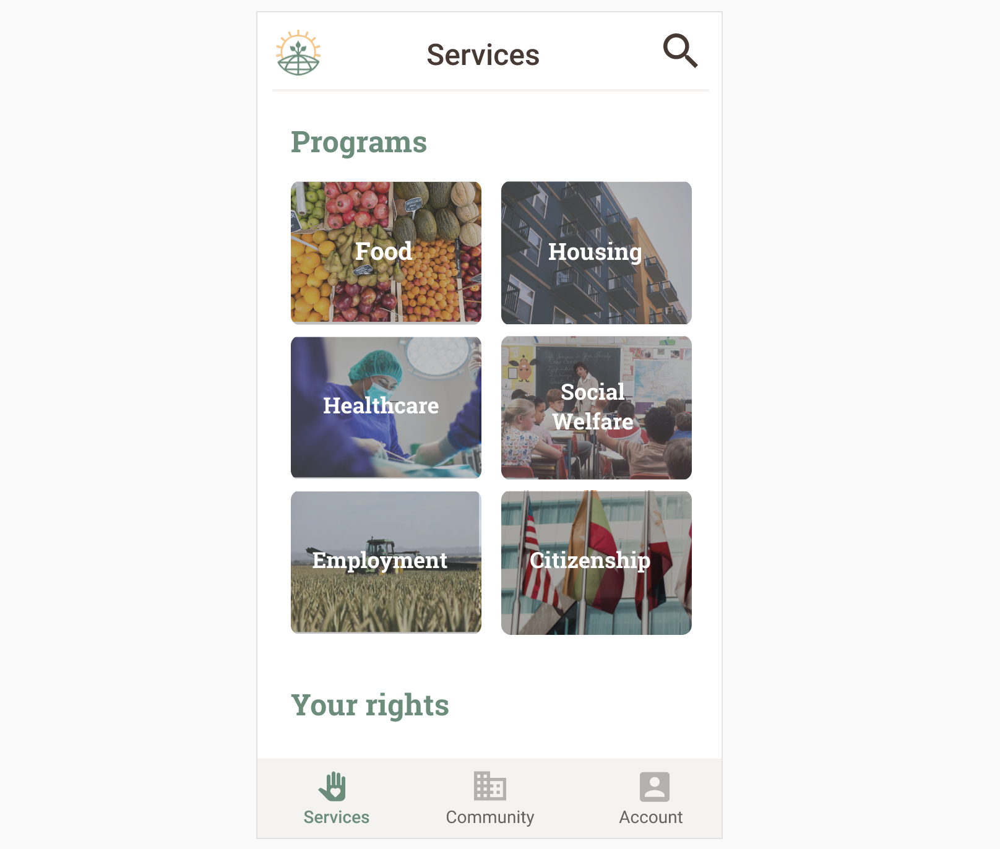
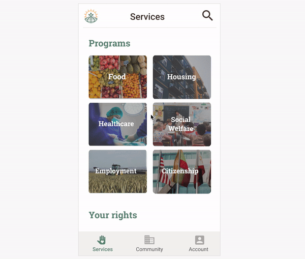
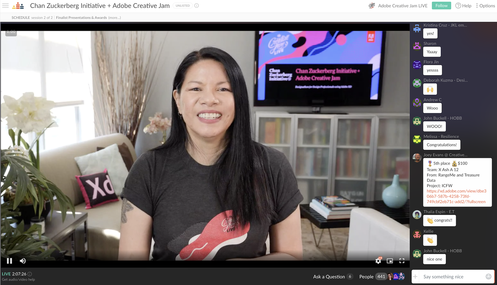

Background
Two months into quarantine, I found out that Adobe was hosting a Creative Jam challenge with Chan Zuckerberg Initiative. I paired up with my long time friend and fellow designer Julie Wong and entered the challenge, naming our team X Ash A 12 (turned out there was another team named after Elon Musk's kid!).
After working nonstop on the weekend, Julie and I designed an app that consolidates resources for farmworkers to access services and credible information.
Context
Farmworkers are the invisible frontline labor force of a country’s food supply. Despite the pandemic and its economic shocks, they're making sure that we have food to put on our table. However, because of the shelter-in-place restrictions, it has become harder for farmworkers, especially those who do not speak English, to gain access to services that typically require in-person meeting and identity verification.
The Challenge
As part of the fictious International Consortium of Farm Workers, create an app that is easy for farmworkers to verify their identity, sign up for services, and get access to timely and credible information.
Key Values
To enable farmworkers to confidently sign up for services and easily connect with resources, we felt that it was important to establish key design principles:
1. Visuals Heavy
Some farmworkers may not read or speak English, so relying on text and visuals can make the designs more accessible for our audience. We wanted to create a seamless experience, regardless of the user's language.

2. Plain and Simple
We want the farmworkers to quickly find the resources they need and complete related tasks with little distraction. Drawing inspiration from Typeform, we focused on creating a simplistic and straightforward app.

User Flows
We focused on grouping the pages and reducing the number of steps it would take for them to apply for a service.

Three Main App Areas:
-
Services: Farmworkers can learn about programs and rights that they are eligible for.
-
Community: Farmworkers can access timely information, sign local petitions, and access resources about partners and allies in their area.
-
Account: Farmworkers can view and remove any information and documents they have shared with the app.
Introducing ICFW App

Farmworkers are first asked to select their preferred language to ensure that they will understand and be able to read the app.

Farmworkers can sign up for an account using basic, non-sensitive information.

After signing up for an account, they are able to access resources in various categories.

Farmworkers can discover assistance programs, learn more about specific services, and apply for assistance. From a quick glance, they can see if they qualify and prepare documents that they may need to share.
Results
We were invited to join the live finale where I represented team "X Ash A 12," presented our app idea and placed 5th out of 85 teams!

"Its strength is in its simplicity."
We were excited to hear one of the judges compliment our app's simplicity because it was one of the values we were striving for when designing the farmworkers.
Future Iterations
This was our first ever design challenge and as we were working on this app with the limited timeline and looking back, we realized that there are areas we could've improved on:
Onboarding farmworkers:
For many people, entering personal and confidential information before seeing the value of the app would discourage some users from even hitting the home screen. Would like to explore pushing account creation to later in the flow, when a farmworker has intents to apply for a service.
Giving a more guided experience:
Filling out a form can be a daunting process and there are subtle changes we could do to make it easier to input. While simplicity was our strength, it was also our weakness because we didn't explain the value of each section.
Including an area to view changes their applications:
After designing out this app, we realized that there isn't an easy way to check the applications a farmworker has submitted. Because farmworkers depend on these services, it would be important for them to be able to easily check the status of their applications and know of any new updates.
Thank you Chan Zuckerberg Initiative & Adobe for hosting this Creative Jam!
This was my first design challenge and it was fun getting to work on a real-life problem with my teammate and get our creative juices flowing during the stay-in-place order.